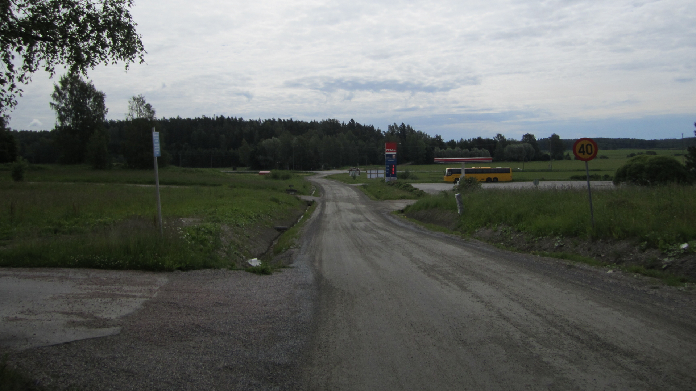

| västerut |
österut |
Level 1 (Karis) |
TOC |
index |
A25 |
Ovanstående bild av banorna i sydvästra Finland Med ELSA banan och dess fortsättning till Åbo inritad. (ELSA är endast en planerad bana mellan Esbo och Salo och här är utritad ett av förslagen, det förslag som följer motorvägen till Åbo)
I och med att ELSA banan blir byggd kommer lönsamheten av sträckan Esbo - Karis i ny dager. I och med ELSA försvinner även "Åbo-tågen" från Esbo - Karis banan. Lokal tågtrafik drogs in hellt efter Kyrkslätt i mars 2016. På den nedre kartan är stationerna på den gamla kustbanan inritade såsom de i tiderna var, med gul eller grön marker. Situationen är hellt en annan om Sverige och Estland trafiken blir av så som här föreslås.
Och här under en nogrannare bild av banan mellan Jorvas och Karis.
I Jorvas möts alltså Europakorridoren (eller egentligen dens förlängning mot öster) och Rail Baltica. Ett tåg som är på väg från Tallinn hållet mot Stockholms hållet byter riktning i Jorvas, och växlar om spår naturligtvis. Så typiskt för järnväg men så främmande för oss bilister. Men vad vi här kallar för "Revals expressen" så går tåget Stockholm - Tallinn ej via Jorvas utan avviker på Porkkala udd direkt mot Käla och Sverige.
För sträckan Jorvas - Kyrkslätt föreslås normalspårbredd. Nuvarande spårbredd ändras.
För sträckan Kyrkslätt - Ingå föreslås ny järnväg med dubbla spår av normalspårbredd.
För sträckan Ingå - Karis föreslås dubbla spår med normalspårbredd. Nuvarande enspåriga bana rivs och ny dubbelspårig bana med normal spårbredd byggs.
Två nya stationer, Degerby och "nya" Ingå. "Gamla" Ingå togs ur bruk i mars 2016.
Ändringarna påverkar även lokaltågen till Kyrkslätt emedan normalspårbredd krävs. Lokaltågen som använder den planerade stadsbanan till Köklax kommer att köra på bredspår. Spårbreddsväxlingen vid Esbo betyder att lokaltåget, och övriga tåg mot sydväst, kör genom spårbreddsväxlaren med en hastighet av cirka 30 km/h. Men när spårbreddsväxlingen är gjor gäller det för tåget att "gasa på" så att tidtabellen håller.
Om järnvägen byggs rätt och principen inget tåg stannar på själva banan utan alla stationer har sina egna stickspår borde tågen kunna köras som höghastighets tåg (max hastighet 300 - 320 km/h).
Som intressant detalj, föreslårs att Ingå station flyttas närmare byn, från nuvarande c.6 km (med bil) till en förlängning av Bollstavägen. Nya Ingå station är därefter på c. 1,7 km från kommungården. För de som bor i Betesmarken eller Ritomten är stationen ännu närmare. Kanske en fotgängar undergång under Ingå kustväg vore på sin plats ? Att pendla in från eller till Ingå med allmänna kommunikations medel kräver att kommunikationen funktionerar och att sträckan till hållplatsen är på gång avstånd, t.ex. 1,7 km, och ej på nuvarande 5 km.
Degerby station är den andra "Degerby stationen" på järnvägslinjen sett från Stockholm. Stationen ligger alldeles vid byn men problemet är, räcker resande till ? En regelbunden och tät kommunikation till Helsingfors både med bil och tåg är målet.
Sjundeå är svår, eftersom bosättningen vid Pikkala och på andra sidan Kasaberget är nästan obefintlig. Idag är avtaget till Sjundeå från stamväg 51 den punkt där den nya järnvägen är som närmast. Egentligen sträcker sig det svårplanerade området även över på Kyrkslätt sidan. Området som borde ses som en helhet vore Kasaberget - Pikkala - Båtvik - Kantvik. Det fanns en järnvägs haltpunkt i Käla, men den är nedlagd. Egentligen låg den ganska väl i detta Kasaberget - Pikkala - Båtvik - Kantvik planerings området.

Utsikt över platsen för Degerby station på sommaren 2014.